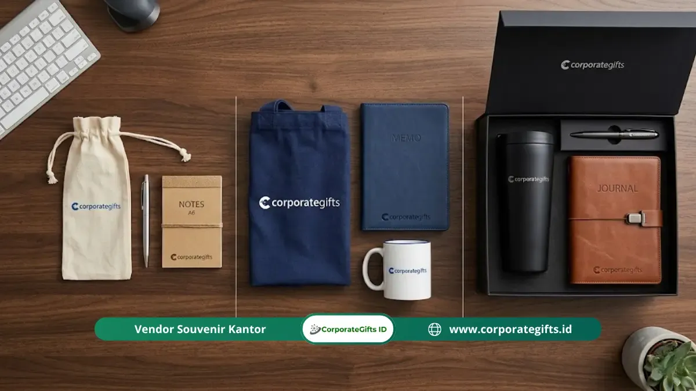

Corporate Gifts ID - Cara memilih isi souvenir perpisahan kantor sesuai anggaran adalah dengan menetapkan estimasi biaya per unit terlebih dahulu, lalu mencocokkannya dengan produk fungsional seperti tumbler, tote bag kanvas, atau agenda kerja yang paling relevan dengan kebutuhan penerima. Anggaran realistis berkisar dari Rp25.000 per unit untuk cinderamata sederhana berkualitas baik hingga di atas Rp150.000 per unit untuk paket goodie bag multi-item berkesan premium.
Poin Kunci Pengadaan Souvenir Perpisahan Kantor:
- Rentang Anggaran Realistis: Biaya per unit souvenir massal umumnya berada di rentang Rp25.000 hingga >Rp150.000, bergantung pada kerumitan cetak dan spesifikasi kemasan.
- Efek Skala Kuantitas: Struktur harga jenjang (tiered pricing) memangkas biaya per unit secara signifikan saat kuantitas pesanan dinaikkan.
- Daya Guna Tinggi: Barang berdaya guna harian seperti tumbler, notebook, dan tote bag memberikan retensi kenangan paling optimal.
- Riset Multi-Vendor: Mengumpulkan minimal 3 surat penawaran resmi adalah kunci memperoleh perbandingan spesifikasi yang transparan.
- Riset PPAI 2023: Merchandise korporat fungsional terbukti memiliki tingkat retensi pakai hingga 76% selama lebih dari 6 bulan pasca-acara.
Mengapa Penetapan Anggaran Adalah Langkah Pertama Pengadaan Souvenir?
Menentukan pagu anggaran sebelum menentukan jenis barang merupakan prinsip fundamental dalam manajemen pengadaan souvenir kantor. Tanpa batasan angka yang definitif, tim panitia internal berisiko terjebak dalam perdebatan selera desain yang subjektif, yang sering kali berujung pada overbudget atau kompromi kualitas yang merugikan citra instansi.
Saat batas biaya per orang sudah ditetapkan, tim pengadaan dapat langsung memfilter ratusan katalog produk dan hanya fokus pada varian yang realistis. Berdasarkan studi industri dari Promotional Products Association International (PPAI) 2023, produk cinderamata fungsional mencatatkan masa retensi aktif sebesar 76% melampaui enam bulan pemakaian. Fakta ini menegaskan bahwa efisiensi sejati bukanlah memilih barang termurah yang cepat rusak, melainkan memilih barang fungsional berkualitas yang tepat pada alokasi anggarannya.

Komposisi isi paket souvenir perpisahan kantor disusun proporsional dengan alokasi kemasan dan proteksi pengiriman.
5 Langkah Praktis Menetapkan Anggaran Souvenir Perpisahan Massal
Penyusunan anggaran souvenir kantor yang tertib meminimalkan risiko pengeluaran tak terduga. Berikut adalah alur perhitungan lima langkah yang terbukti efektif digunakan oleh corporate secretary maupun panitia gathering kantor:
- Finalisasi Jumlah Penerima: Catat daftar penerima secara akurat (karyawan purnatugas, rekan kerja divisi, manajemen, atau tamu undangan khusus) untuk menghindari revisi volume di tengah jalan.
- Tetapkan Total Plafon Biaya: Koordinasikan dengan bagian finance untuk memastikan dana bersih yang dialokasikan khusus untuk pos merchandise apresiasi.
- Hitung Biaya Bersih per Unit: Bagi total dana dengan jumlah penerima, lalu sisihkan alokasi sekitar 10-15% untuk pos ongkos kirim dan kemasan individual (box/pouch).
- Sediakan Buffer Cadangan 10%: Selalu sertakan kuota cadangan unit untuk mengantisipasi kehadiran tamu kehormatan tambahan atau penggantian unit jika terjadi kendala penanganan di venue.
- Ajukan RFQ Resmi ke Minimal 3 Vendor: Minta surat penawaran harga detail lengkap dengan spesifikasi gramatur bahan, teknik branding logo, dan estimasi waktu pengerjaan.
Pilihan Isi Souvenir Perpisahan Berdasarkan Kisaran Budget Unit
Setiap tingkatan anggaran membuka opsi kombinasi produk yang berbeda. Berikut adalah pembagian tier pengadaan yang paling umum diterapkan di instansi pemerintah, BUMN, maupun perusahaan swasta nasional:
1. Anggaran di Bawah Rp25.000 per Unit (Tier Ekonomis Cerdas)
Dalam rentang anggaran hemat ini, fokus utama adalah kesederhanaan desain grafis dan fungsionalitas harian. Pilihan yang paling realistis meliputi tote bag blacu/spunbond custom, pulpen stylus metal satu warna, atau buku saku catatan ringkas. Kunci sukses tier ini adalah cetakan logo yang rapi dan tipografi pesan perpisahan yang elegan, bukan memaksakan material mewah yang justru menurunkan standar durabilitas.
2. Anggaran Rp25.000 hingga Rp75.000 per Unit (Tier Standar Fungsional)
Rentang menengah ini merupakan kategori yang paling populer untuk perpisahan massal seluruh staf divisi. Panitia dapat memilih satu produk utama berkualitas tinggi, seperti tumbler plastik food-grade BPA-free, mug keramik custom dua sisi, tote bag kanvas tebal dengan sablon presisi, atau notebook hard cover ukuran A5. Kemasan pendukung berupa paper bag kraft ramah lingkungan dapat disematkan dengan mudah.
3. Anggaran Rp75.000 hingga Rp150.000 per Unit (Tier Goodie Bag Kombinasi)
Pada kisaran ini, paket kombinasi dua produk (dual-item set) menjadi pilihan yang sangat prestisius. Kombinasi favorit antara lain vacuum tumbler stainless SUS 304 yang dipadukan dengan agenda kulit sintetis, atau payung lipat otomatis bersama clutch pouch serbaguna. Penambahan pouch kanvas bertali atau kotak kardus corrugated dengan sleeve custom akan memberikan visual unboxing yang profesional.
4. Anggaran di Atas Rp150.000 per Unit (Tier Executive Gift Set)
Untuk level perpisahan pimpinan divisi, manajer senior, atau rekan kerja yang telah mengabdi lebih dari satu dekade, tier premium ini menyajikan paket 3 hingga 4 item eksklusif. Komposisi mencakup smart tumbler LED suhu, powerbank nirkabel berkapasitas besar, pulpen metal berukir grafir laser nama personal, serta notebook eksekutif yang ditata rapi dalam rigid hardbox dengan bantalan busa velvet dan kartu ucapan berstempel emas (hot print).
Tabel Komparasi Anggaran, Pilihan Produk, dan Opsi Kemasan
Untuk mempermudah presentasi usulan anggaran di hadapan manajemen atau bendahara panitia, berikut ringkasan matriks pengadaan souvenir perpisahan kantor:
| Tier Anggaran (per Unit) | Rekomendasi Isi Produk | Opsi Kemasan & Finishing | Target Penerima Ideal |
|---|---|---|---|
| < Rp 25.000 | Tote bag spunbond 75 gsm, pulpen stylus metal, memo pad saku | Plastik OPP bening berpita / sleeve kertas kraft sederhana | Peserta magang, staf kontrak, rekan perpisahan massal lintas unit |
| Rp 25.000 - Rp 75.000 | Tumbler sport aluminium / mug keramik printing / notebook A5 spiral | Paper bag cetak 1 warna, stiker penutup bermotif logo perusahaan | Rekan kerja satu departemen, karyawan purnatugas reguler |
| Rp 75.000 - Rp 150.000 | Vacuum flask SUS 304 + agenda binder kulit + pulpen rollerball metal | Kotak kardus e-flute die-cut dengan sleeve full color & kartu ucapan | Supervisor, team leader, rekan kerja senior berdedikasi tinggi |
| > Rp 150.000 | Executive gift set 4-in-1 (smart tumbler, powerbank, pen metal, cardholder) | Rigid hardbox premium dengan foam penahan presisi, finishing hot foil emas | Manajer, direksi, kepala cabang, atau tokoh penting instansi |
Strategi Mendapatkan Penawaran Harga Terbaik dari Vendor B2B
Mengamankan penawaran harga paling ekonomis tanpa memangkas kualitas material membutuhkan beberapa taktik pengadaan cerdas:
- Optimalkan Skala Kuantitas (Tiered Pricing): Tanyakan kepada vendor batas minimal order untuk mendapatkan diskon level berikutnya. Sering kali, menambah 15-20 unit pesanan menghasilkan total nominal yang sama atau lebih hemat karena harga per unit turun drastis.
- Hindari Biaya Rush Order: Pemesanan mendesak (kurang dari 5 hari kerja) umumnya memicu biaya lembur operasional hingga 20-30%. Lakukan konfirmasi desain minimal 3 pekan sebelum hari perayaan.
- Pilih Teknik Cetak yang Efisien: Jika logo perusahaan memiliki warna solid, sablon manual 1 atau 2 warna jauh lebih ekonomis untuk volume besar dibandingkan UV digital printing multiwarna.
- Spesifikasi Detail dalam Satu Tagihan: Pastikan harga yang ditawarkan sudah mencakup biaya kustomisasi branding, kemasan individual, dan ongkos kirim langsung ke kantor untuk mencegah tagihan susulan.
Faktor yang Mempengaruhi Perbedaan Penawaran Harga Antar Vendor
Ketika Anda membandingkan penawaran dari vendor yang berbeda, perbedaan harga biasanya bersumber dari empat variabel utama berikut:
- Kualitas Bahan Baku: Tumbler stainless dengan sertifikasi food-grade SUS 304 memiliki ketahanan korosi yang jauh lebih unggul dibandingkan grade 201 yang lebih murah.
- Ketahanan Hasil Cetak: Teknik laser engraving (grafir) pada bahan logam menghasilkan ketahanan permanen seumur hidup, berbeda dengan sablon biasa yang dapat memudar jika sering dicuci.
- Standar Quality Control (QC): Vendor profesional melakukan penyortiran unit satu per satu untuk memastikan tidak ada goresan atau cetakan cacat sebelum barang dikemas.
- Ketepatan Garansi Pengiriman: Layanan penggantian unit rusak selama perjalanan ekspedisi merupakan nilai tambah krusial yang melindungi anggaran belanja Anda.
Pertanyaan Seputar Anggaran Souvenir Perpisahan Kantor (FAQ)

Ditulis oleh: Arinda Zakia
Senior Corporate Gifting SpecialistSpesialis perencanaan cinderamata korporat dan strategi pengadaan merchandise B2B di CorporateGifts.ID dengan pengalaman kurasi lebih dari 8 tahun melayani perusahaan multinasional dan BUMN.
Lihat Profil Lengkap & Panduan Lainnya